牛肉 biang biang 面
Biang Biang with beef
Wide belt noodles, chewy and pulled by hand, with marinated beef, chilli and pak choi.
£12.00
Xi'an street food at Wharf Kitchen, E14
4.5 from 300+ reviews on Deliveroo
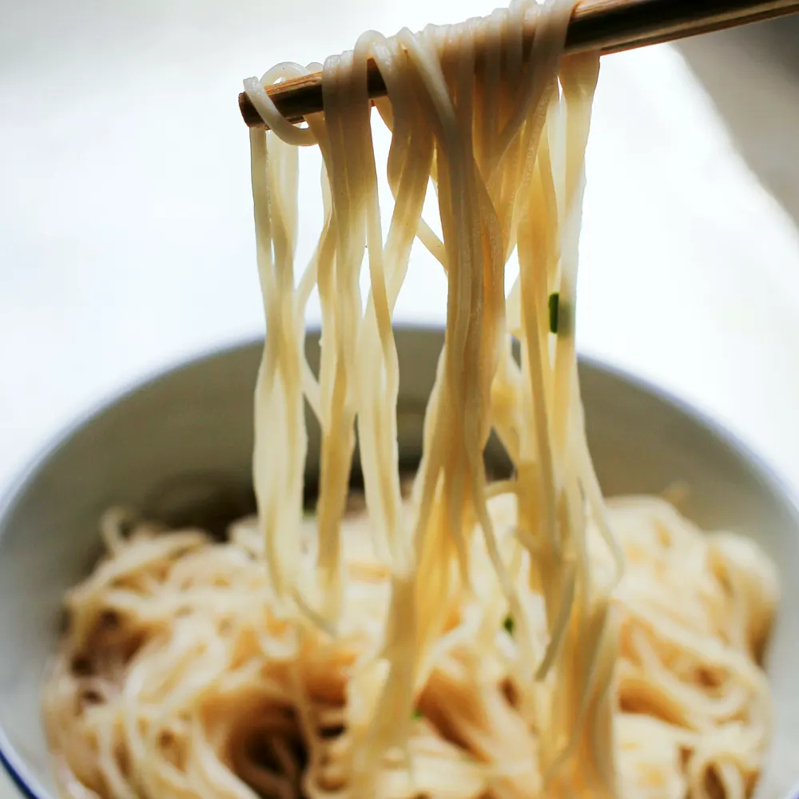
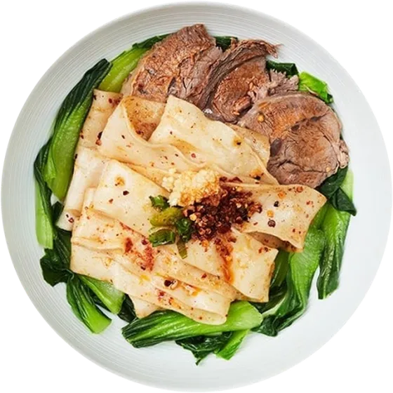
Mix wellbefore you dig in
Where to start
牛肉 biang biang 面
Wide belt noodles, chewy and pulled by hand, with marinated beef, chilli and pak choi.
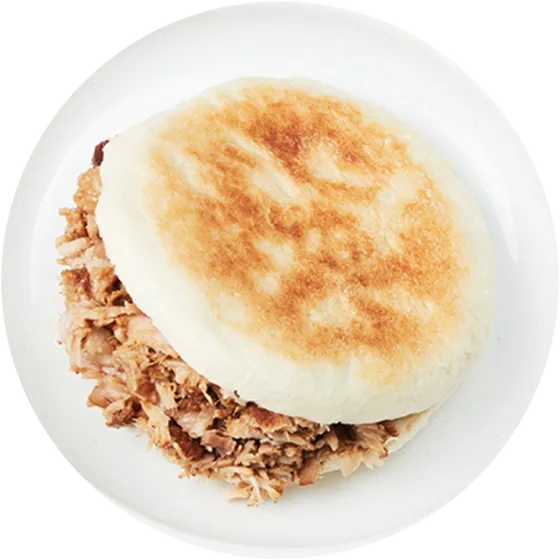
肉夹馍 · Popular
Xi'an's own burger: pork slow-stewed with over 20 herbs and spices in a crispy handmade bun.
凉皮 · Vegan
Cool, slippery noodles with cucumber, bean sprouts and our homemade spicy sauce.
Why it's called biang
Every belt noodle is stretched at our counter. Watch it happen while you wait.
Straight into the pot once you order, so it reaches you chewy and hot.
Chilli and spices, then beef, cumin lamb, egg & tomato, chicken or vegan.
Toss it all through before your first bite. That's where the flavour lives.
Guests and their bowls
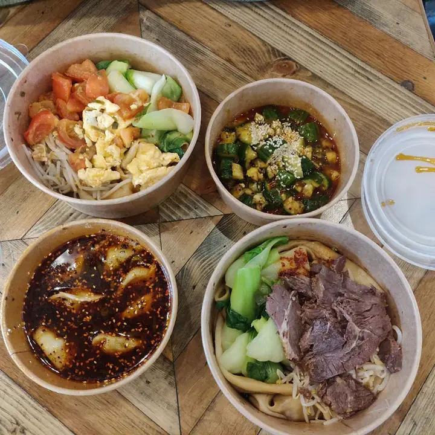
It reminds me of my trip to Xi'an two years ago. I can't believe I can now have hand-pulled Biang Biang noodles and a Cumin Lamb Burger in Canary Wharf! It was fun watching the staff pull the noodles while waiting. The price was really good and the portion was generous.
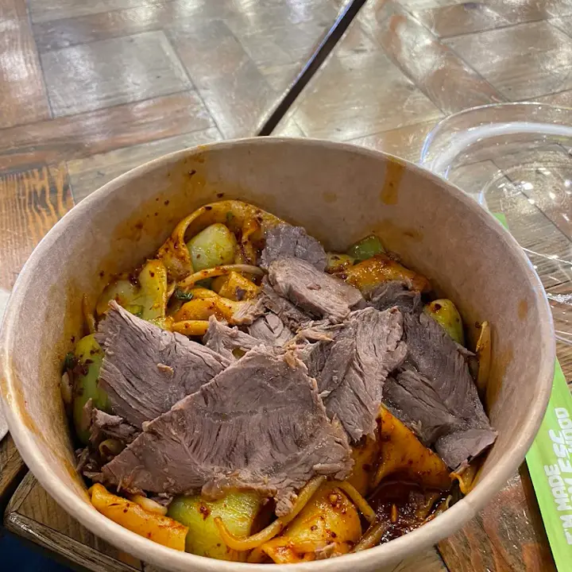
Beef biangThe hand-pulled noodles with marinated beef were seriously delicious. Chewy noodles, a perfect spicy sauce, and really friendly staff.
All the noodles are freshly hand-pulled at the restaurant. The lamb was covered in a cumin-spiced sauce. As a Chinese person, I found the food quite authentic.
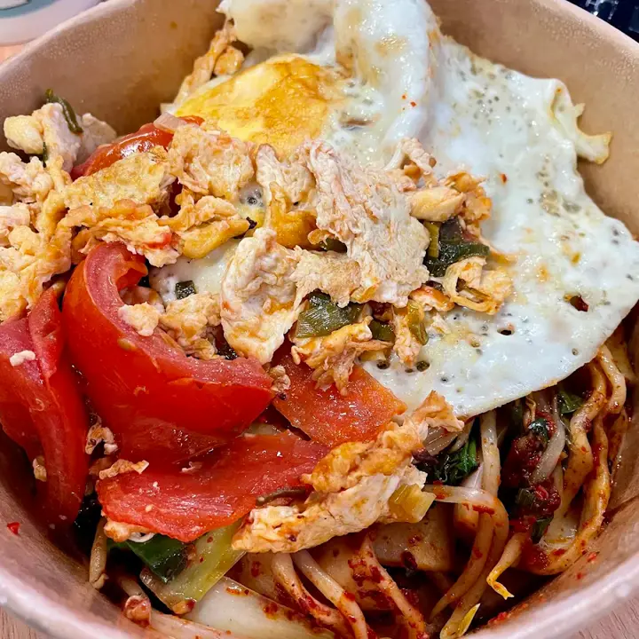
Egg & tomatoAmazing fresh hand-pulled noodles. The egg soaked up the fantastic Biang Biang sauce. A large vegetarian selection too, including vegan noodles.
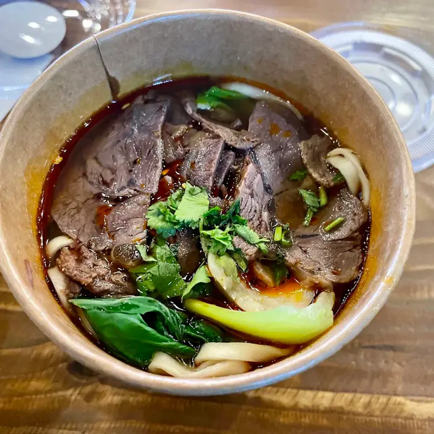
Beef noodle soupThe braised beef noodle soup was authentic and delicious. One of the best bowls of this kind I've had in London.
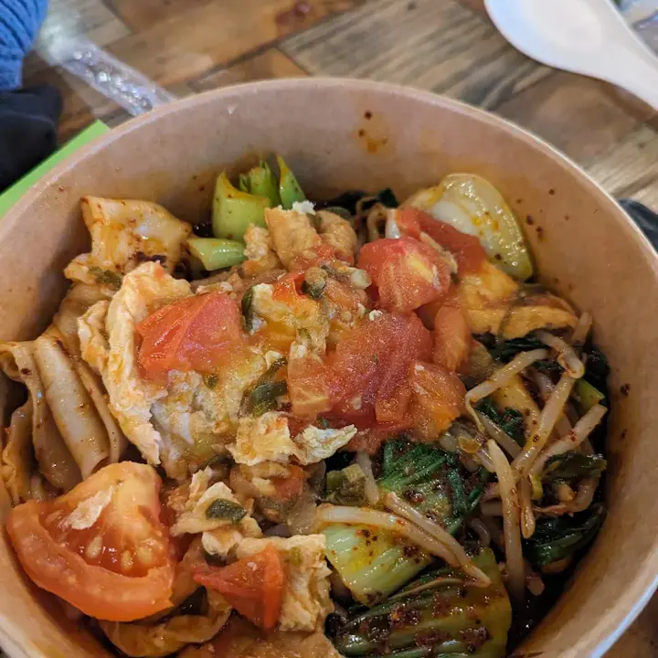
First biangMy first time trying Biang noodles: I loved the chewy texture and thickness, the stir-fried tomato and just the right level of spice. A generous portion.
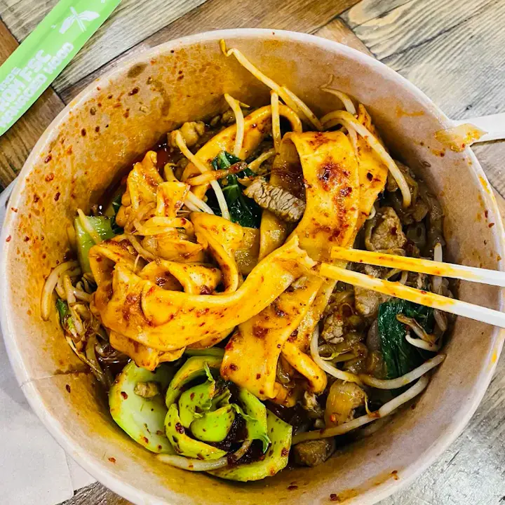
Must-tryThe beef Biang Biang noodles are a must-try. Wonderfully chewy and delicious, a very satisfying dish.
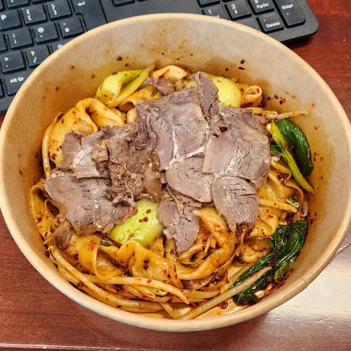
From Xi'anAs someone originally from Xi'an, I enjoyed them. Really tasty in their own right, with a great noodle texture.
Your turn?
Order ahead and your bowl is waiting at the counter.
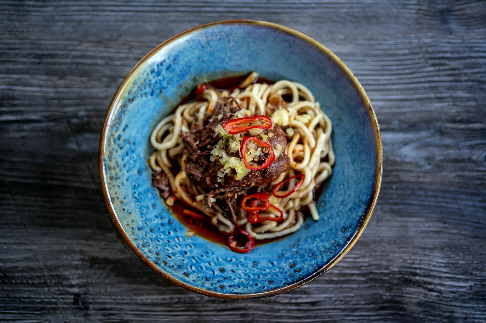
Order direct
Add a fried egg, extra lamb or extra noodles as you go.
As soon as possible, or a set time for your lunch break.
No card online, no app fees. Your bowl is waiting at Unit 7.
Rather order at the counter?
Open today from 11:00
Unit 7, Wharf Kitchen, Jubilee Place, E14 5NY
020 7718 8700In Wharf Kitchen
Ordering for a team or a meeting? Send us a message with the number of people and a time, and we'll get back to you.
Vegan Biang Biang, Liang Pi cold noodles, Sesame Cold Noodles and Smashed Cucumber are all vegan, as long as you don't add chicken or egg.
In Wharf Kitchen, the food hall in the Lower Mall of Jubilee Place, close to Canary Wharf station. Look for Unit 7.
Our own online ordering is for collection: order ahead and your food is ready at our counter. You pay when you collect.
Dishes marked spicy come with chilli. Prefer it milder? Mention it in your order note.
All dishes may contain traces of the 14 major allergens, including gluten, peanuts, sesame and soy. Call us on 020 7718 8700 before you order and we'll talk you through the menu.